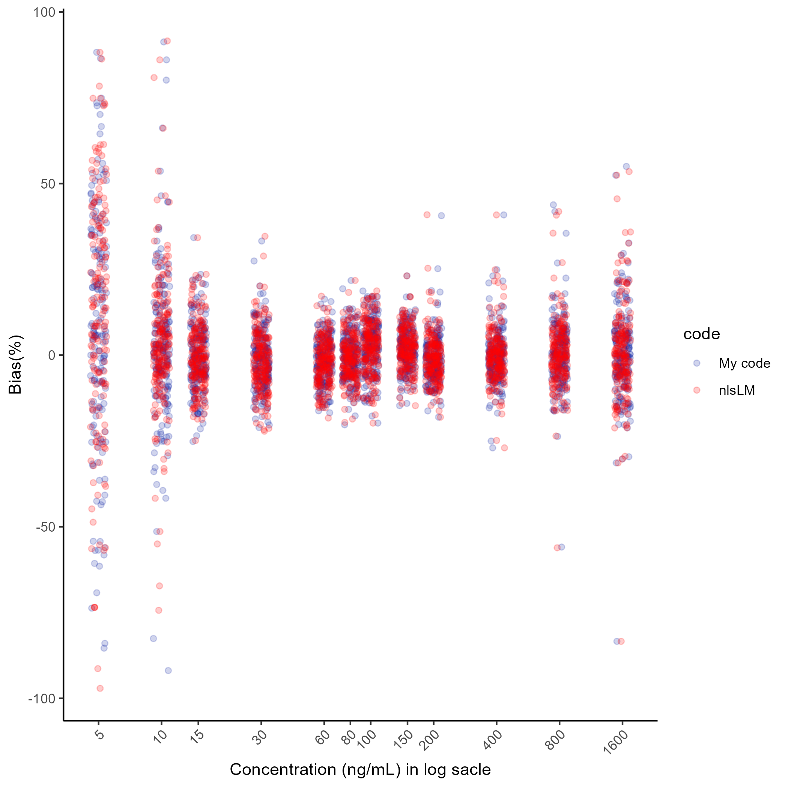
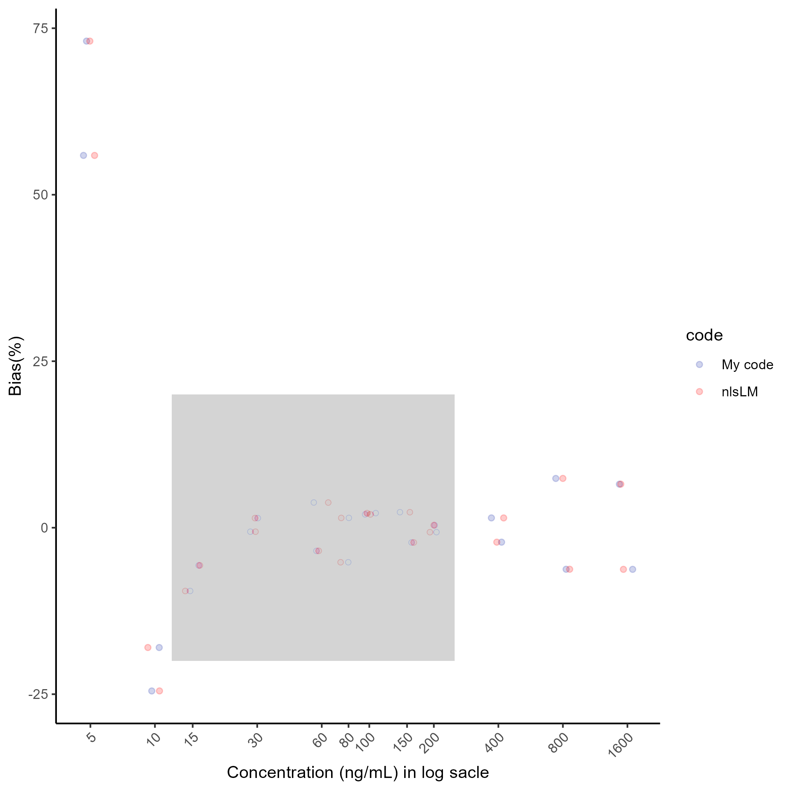
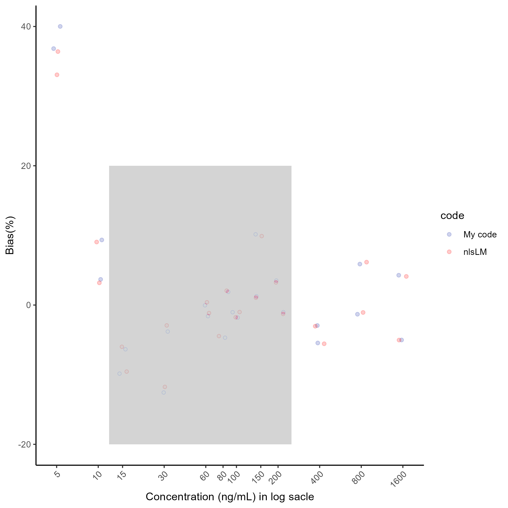
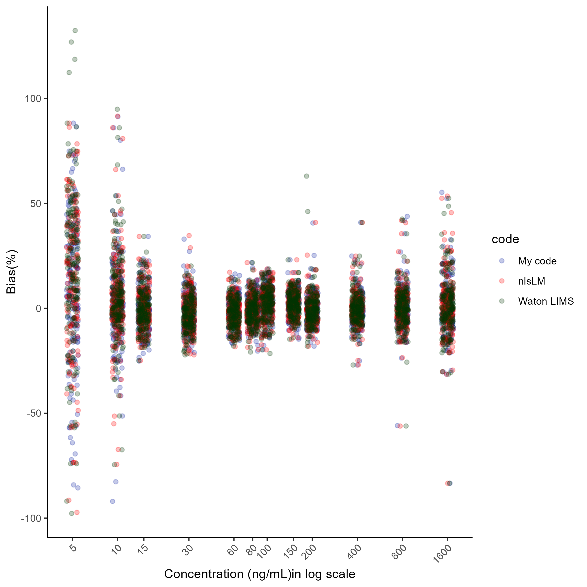

Chapter 7 Evaluation of the custom code
From a practical perspective, it makes sense to compare both functions (nlsLM and the custom code) to ensure that the custom code works properly for the calibration curve fitting because the estimated parameters might not be identical due to the inherent characteristic of this optimization algorithm since it aims to find local minima rather than a global minimum. Therefore, the direct comparison of the parameters is not practical and that also may lead to inappropriate interpretations. For those reasons, we’ll apply more intuitive method based on the general principle and practice of the analytical method validation.
First, we’ll optimize parameters of each run using my code and nlsLM, independently. Next, using the parameters we’ll compute back-calculated concentrations of each calibration standard to evaluate accuracy of those. The accuracy can be expressed and measured by %Bias such as:
\[ \text{%Bias} =\frac{\text{(Back-calculated Concentration - Nominal Concentration)}}{\text{Nomincal Concentration}} \cdot 100 \]
Second, we’ll plot the %Bias result so can compare those visually. In most of cases, the acceptable accuracy range for LLOQ and ULOQ calibration standard is \(\pm\) 25 %Bis, and \(\pm\) 20 %Bias for the others. These do not usually apply to anchor point(s), but this time we’ll do to compare the %Bias of all calibration standards, to check how they differ, and to determine if the differences are within the acceptance criteria for accuracy, despite any discrepancies. In my experience, it is a good practice to evaluate results carefully, as not all commercial analytical software provides the same level of transparency. This is particularly important when using different software, since users cannot always be sure of the algorithms being used or whether there are differences in certain aspects, even when the same algorithm is applied.
Here’s an example code. By running this code, we can obtain optimized parameter from each run, which are estimated by my code and save them as result for %Bias calculation.
LM.custom <- function(w0, data, run) {
w <- w.previous <- w0
k <- 0
feval <- 0
mu <- 1e-2
ftol <- 1e-6
ptol <- 1e-6
gtol <- 0
maxiter <- 200
maxfev <- 600
y <- data$od[data$run == run]
x_data <- unique(data$conc)
n <- length(x_data)
x_rep <- rep(x_data, 2)
df_temp <- data.frame(x = unique(data$conc), od = y)
f <- function(w0) {
model <- w0[1] + (w0[4] - w0[1]) / (1 + (x_rep / w0[3])^w0[2])^w0[5]
return(model)
}
model.fn <- function(x, a, b, c, d, e) {
a + (d - a) / (1 + (x / c)^b)^e
}
chi.squre.fn <- function(w) {
chi.sq <- sum((y - f(w))^2)
return(chi.sq)
}
norm.fn <- function(x) sqrt(sum(x^2))
initial.chisq <- previous.chisq <- chi.squre.fn(w)
calculate.cosine.angles <- function(y, w) {
r <- y - f(w)
J <- numDeriv::jacobian(f, w)
norm.r <- sqrt(sum(r^2))
cosine.angles <- numeric(ncol(J))
for (i in 1:ncol(J)) {
J.col <- J[, i]
norm.J.col <- sqrt(sum(J.col^2))
dot.product <- sum(J.col * r)
cosine.angles[i] <- dot.product / (norm.J.col * norm.r)
}
return(cosine.angles)
}
while (k < maxiter && feval < maxfev) {
J <- numDeriv::jacobian(f, w)
r1 <- y - f(w) #
Jr <- t(J) %*% r1
feval <- feval + 1
if (feval == maxfev) {
cat("Number of function evaluations reached: ", feval, "\n")
break
}
JTJ <- t(J) %*% J + mu * diag(ncol(J))
QR <- qr(JTJ)
damp <- mu * diag(ncol(JTJ))
JTJ.inv <- tryCatch({
qr.solve(JTJ)
}, error = function(e) {
ginv(JTJ)
})
dk <- JTJ.inv %*% Jr
w1 <- w + dk
chisq.new <- chi.squre.fn(w1)
actual.relative.reduction <- abs( previous.chisq - chisq.new) / previous.chisq
predicted.relative.reduction <- p <- (previous.chisq - chisq.new) / abs(t(dk) %*% (damp %*% dk + Jr))
relative.error <- max(abs(w1 - w.previous)) / max(abs(w.previous))
cosine.angles <- calculate.cosine.angles(y, w)
convergence <- function() {
if (actual.relative.reduction < ftol & p < ftol) {
convergence.result <- paste("ARD:", actual.relative.reduction, "\n", "PRD:", p )
} else if (relative.error < ptol) {
convergence.result <- paste("RE:", relative.error)
} else {
convergence.result <- paste("CA:", cosine.angles)
}
}
convergence.result <- c()
if (actual.relative.reduction < ftol & p < ftol || relative.error < ptol || max(abs(cosine.angles)) < gtol ) {
convergence.result <- convergence()
break
}
if (p > 0) {
mu <- max(mu / 9, 1e-10)
w.previous <- w
w <- w1
} else {
mu <- min(mu * 11, 1e10)
}
previous.chisq <- chisq.new
k <- k + 1
if (k == maxiter) {
cat("Number of iterations till stop: ", k, "\n")
break
}
}
result <- list(parameters = w)
return(result)
}
result.list.mdf <- list()
for(i in unique(df_temp$run)){
w <- c(df_start$Max[df_start$run==i],
df_start$Slope[df_start$run==i],
df_start$C[df_start$run==i],
df_start$Min[df_start$run==i],
df_start$M[df_start$run==i])
result.list.mdf[[i]] <- try(LM.custom(w, df_temp, i))
}## Number of iterations till stop: 200
## Number of iterations till stop: 200
## Number of iterations till stop: 200
## Number of iterations till stop: 200
## Number of iterations till stop: 200
## Number of iterations till stop: 200
## Number of iterations till stop: 200
## Number of iterations till stop: 200result.list.mdf <- result.list.mdf[lapply(result.list.mdf,length)>0]
result.list.mdf <- as.vector(unlist(result.list.mdf))
result.list.mdf <- matrix(result.list.mdf, ncol=5, byrow = TRUE)
parameters <- as.data.frame(result.list.mdf)
parameters$run <- c(1:101)
colnames(parameters) <- c("w1", "w2", "w3", "w4", "w5", "run")This code is for nlsLM in R to do the same.
LM.nlsLM <- function(w0, data, run) {
y <- data$od[data$run == run]
x_data <- unique(data$conc)
n <- length(x_data)
x_rep <- rep(x_data, 2)
y <- data$od[data$run == run]
df_temp <- data.frame(x=unique(data$conc), od=y)
model_fn <- function(x, a, b, c, d, e) {
a + (d - a) / (1 + (x / c)^b)^e
}
fit <- try(nlsLM(y ~ model_fn(x, a, b, c, d, e), data = df_temp,
start = list(a = w0[1], b = w0[2], c = w0[3], d = w0[4], e = w0[5]),
control = nls.lm.control(maxiter = 1000, ftol = 1e-6)))
result <- coef(fit)
}
result.list.nlsLM <- list()
for(i in unique(df_temp$run)){
w <- c(df_start$Max[df_start$run==i],
df_start$Slope[df_start$run==i],
df_start$C[df_start$run==i],
df_start$Min[df_start$run==i],
df_start$M[df_start$run==i])
result.list.nlsLM[[i]] <- try(LM.nlsLM(w, df_temp, i))
}
result.list.nlsLM <- result.list.nlsLM[lapply(result.list.nlsLM,length)>0]
result.list.nlsLM <- matrix(unlist(result.list.nlsLM), ncol=5, byrow = TRUE)
parameters.2 <- as.data.frame(result.list.nlsLM)
parameters.2$run <- c(1:101)
colnames(parameters.2) <- c("w1", "w2", "w3", "w4", "w5", "run")Next, using those parameters and assay signal, we’ll back-calculate the concentrations of all calibration standard samples. For this, we need the inverse function of the 5 PL curve model:
\[ \text{Concentration} = C \cdot \left( \left( \frac{A - D}{od - D} \right)^{\frac{1}{G}} - 1 \right)^{\frac{1}{B}} \]
Where,
- D: Infinite X asymptote, W1
- B: Slope/Hill, W2
- C: Inflection point, W3
- A: Small X asymptote, W4
- G: asymmetric factor, W5
df_temp[, "xhat1"] <- NA ## for my code
df_temp[, "xhat2"] <- NA ## for nlsLM
x.hat <- function(od, w){
xhat <- w[3] * (((w[4] - w[1])/(od - w[1]))^(1/w[5]) - 1)^(1 / w[2])
return(xhat)
}
for(i in 1:nrow(df_temp)){
od <- df_temp[i, 4]
w <- as.vector(unlist(parameters[parameters$run == df_temp[i, 5], c(1:5)]))
df_temp[i, 6] <- x.hat(od, w)
}
for(i in 1:nrow(df_temp)){
od <- df_temp[i, 4]
w <- as.vector(unlist(parameters.2[parameters.2$run == df_temp[i, 5], c(1:5)]))
df_temp[i, 7] <- x.hat(od, w)
}
df_temp <- df_temp %>% mutate(bias1 = round((xhat1 - conc)/conc * 100, 2),
bias2 = round((xhat2 - conc)/conc * 100, 2))To confirm the comparison results, we reconstruct the %Bias data as follows:
bias.1 <- df_temp[, c(1:6, 8)]
bias.2 <- df_temp[, c(1:5, 7, 9)]
colnames(bias.1) <- c("calb", "conc", "rep", "od", "run", "xhat", "bias")
colnames(bias.2) <- c("calb", "conc", "rep", "od", "run", "xhat", "bias")
bias <- rbind(bias.1, bias.2)
bias$code <- gl(2, nrow(bias)/2, labels = c("My code", "nlsLM"))Finally, we visualize the %Bias of all calibration standard samples as follows:
set.seed(03)
g1 <- ggplot(bias, aes(log(conc), bias, col=code)) +
geom_jitter(alpha=.2)+
scale_colour_manual(values = c("#1226A3", "#FF0000")) +
scale_x_continuous(breaks = c(log(5), log(10), log(15), log(30), log(60), log(80), log(100), log(150), log(200), log(400), log(800), log(1600)),
labels = c("5", "10", "15", "30", "60", "80", "100", "150", "200", "400", "800", "1600")) +
theme(panel.grid.major = element_blank(), panel.grid.minor = element_blank(),
panel.background = element_blank(), axis.line = element_line(colour = "black")) +
theme(axis.text.x = element_text(angle = 45, hjust = 1)) +
ylab("Bias(%)")+
xlab("Concentration (ng/mL) in log sacle")
ggsave(here("result","g1.png"), plot=g1, dpi=300)## Saving 7 x 7 in image
Most of the points (the %Bias) overlap closely, indicating that the results are very similar. Only a few points show significant vertical differences, even considering the use of geom_jitter1, but these are minor and do not affect the overall conclusion. If we want to compare the parameters estimation results and %Bias results of a specific run, first specify a run we want as follows:
And do as follows:
p1 <- unlist(list(parameters[parameters$run ==n, c(1:5)]))
p2 <- unlist(list(parameters.2[parameters.2$run ==n,c(1:5) ]))
b1 <- unlist(list(bias.1$bias[bias.1$run == n]))
b2 <- unlist(list(bias.2$bias[bias.2$run == n]))
cat("The custom code parameter result:" , p1, "\n")
cat("The nlsLM in R parameter result:" , p2, "\n")
cat("The custom code %Bias result:" , b1, "\n")
cat("The nlsLM in R %Bias result:" , b2)And the result will be shown up:
## The custom code parameter result: 6.589187 1.323836 193.6181 0.01556511 0.237396## The nlsLM in R parameter result: 6.58917 1.323835 193.6187 0.01556504 0.2373973## The custom code %Bias result: 73.07 -17.99 -5.66 -0.6 3.78 1.47 2.19 2.33 -0.67 -2.17 7.4 -6.25 55.9 -24.51 -9.5 1.44 -3.48 -5.19 2 -2.22 0.38 1.47 -6.24 6.54## The nlsLM in R %Bias result: 73.07 -17.99 -5.66 -0.6 3.78 1.47 2.19 2.33 -0.67 -2.17 7.4 -6.25 55.9 -24.51 -9.5 1.44 -3.48 -5.19 2 -2.22 0.38 1.47 -6.24 6.54For visualization of the %Bias, do as follows (the grey area indicates quantification range and acceptable range of the %Bias) :
g2 <- ggplot(bias[bias$run==n,], aes(log(conc), bias, col=code)) +
geom_jitter(alpha=.2)+
scale_colour_manual(values = c("#1226A3", "#FF0000")) +
scale_x_continuous(breaks = c(log(5), log(10), log(15), log(30), log(60), log(80), log(100), log(150), log(200), log(400), log(800), log(1600)),
labels = c("5", "10", "15", "30", "60", "80", "100", "150", "200", "400", "800", "1600")) +
theme(panel.grid.major = element_blank(), panel.grid.minor = element_blank(),
panel.background = element_blank(), axis.line = element_line(color = "black")) +
theme(axis.text.x = element_text(angle = 45, hjust = 1)) +
geom_rect(aes(xmin=log(12), xmax=log(250),
ymin=-20, ymax=20), fill= "grey", alpha =.01, color=NA)+
ylab("Bias(%)")+
xlab("Concentration (ng/mL) in log sacle")
ggsave(here("result", "g2.png"), plot= g2, dpi=300)## Saving 7 x 7 in image
Here’s a another result:
n <- 74
p1 <- unlist(list(parameters[parameters$run ==n, c(1:5)]))
p2 <- unlist(list(parameters.2[parameters.2$run ==n,c(1:5) ]))
b1 <- unlist(list(bias.1$bias[bias.1$run == n]))
b2 <- unlist(list(bias.2$bias[bias.2$run == n]))
cat("The custom code parameter result:" , p1, "\n")
cat("The nlsLM in R parameter result:" , p2, "\n")
cat("The custom code %Bias result:" , b1, "\n")
cat("The nlsLM in R %Bias result:" , b2)## The custom code parameter result: 5.491253 1.046752 273.3658 -0.01495246 0.2559358## The nlsLM in R parameter result: 6.812359 1.078459 224.6647 -0.01205867 0.1744507## The custom code %Bias result: 40.01 9.35 -6.36 -3.81 -1.6 -4.69 -1.8 1.26 -1.02 -5.45 5.88 4.28 36.82 3.68 -9.85 -12.56 -0.04 1.89 -1.03 10.15 3.52 -2.94 -1.32 -5.02## The nlsLM in R %Bias result: 36.4 9.05 -5.99 -2.93 -1.15 -4.46 -1.76 1.05 -1.28 -5.56 6.16 4.11 33.06 3.19 -9.56 -11.75 0.4 2.07 -1 9.9 3.24 -3.04 -1.07 -5.03g3 <- ggplot(bias[bias$run==n,], aes(log(conc), bias, col=code)) +
geom_jitter(alpha=.2)+
scale_colour_manual(values = c("#1226A3", "#FF0000")) +
scale_x_continuous(breaks = c(log(5), log(10), log(15), log(30), log(60), log(80), log(100), log(150), log(200), log(400), log(800), log(1600)),
labels = c("5", "10", "15", "30", "60", "80", "100", "150", "200", "400", "800", "1600")) +
theme(panel.grid.major = element_blank(), panel.grid.minor = element_blank(),
panel.background = element_blank(), axis.line = element_line(color = "black")) +
theme(axis.text.x = element_text(angle = 45, hjust = 1)) +
geom_rect(aes(xmin=log(12), xmax=log(250),
ymin=-20, ymax=20), fill= "grey", alpha =.01, color=NA)+
ylab("Bias(%)")+
xlab("Concentration (ng/mL) in log sacle")
ggsave(here("result","g3.png"),plot=g3, dpi=300)## Saving 7 x 7 in image
The parameter results were slightly different and so were the %Bias results. However, the discrepancy between the %Bias results were small and the %Bias of all calibration standard curve samples within the quantification range (from LLOQ to ULOQ) met the acceptance criteria for accuracy.
Finally, this is the last example of comparison of the %Bias results. The new %Bias results are obtained by Watson LIMS. Watson LIMS also provides a wide range of algorithm for non-linear regression and for the optimization of parameters and computation of %Bias, I chosen Marquardt algorithm that is the LM algorithm. As can be seen below, most of points overlap closely.

The
geom_jitterfunction is used to add a small random variation to the position of data points, shifting them both vertically and horizontally. This helps preventing the data from overlapping when plotted, making them more distinguishable, especially when multiple data points have the same or very similar values.↩︎